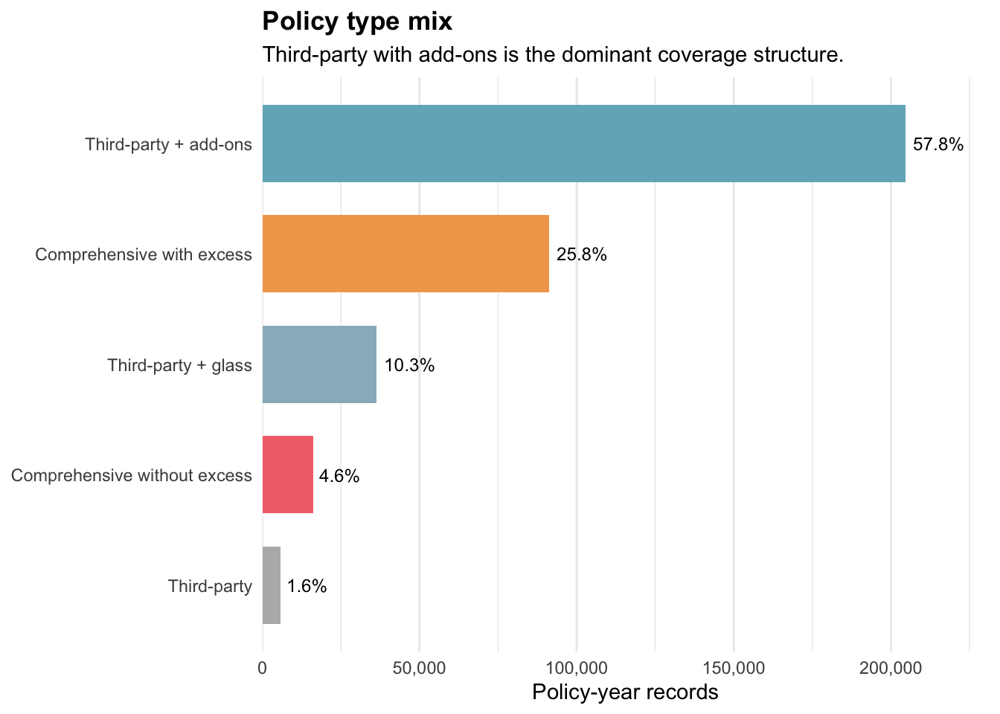
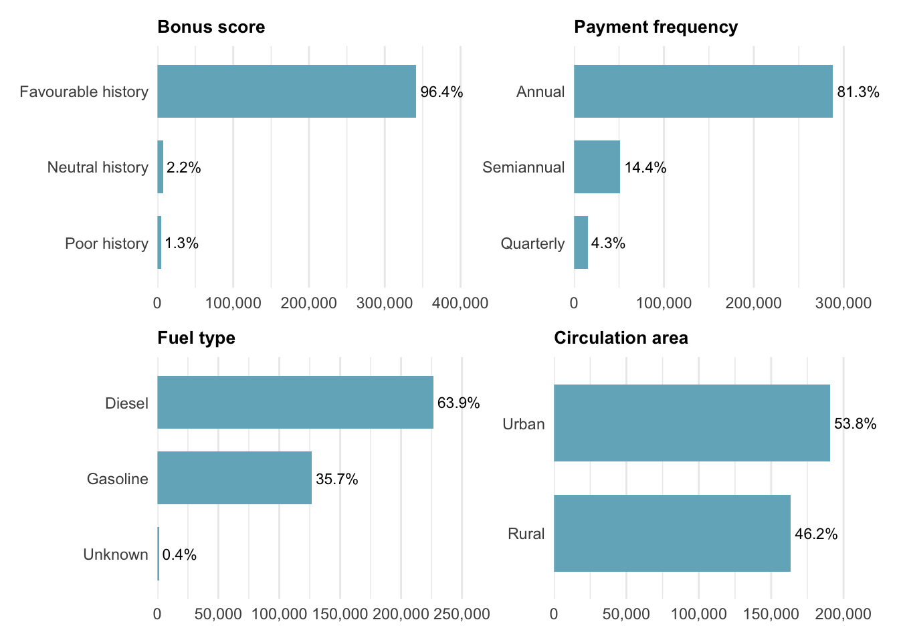
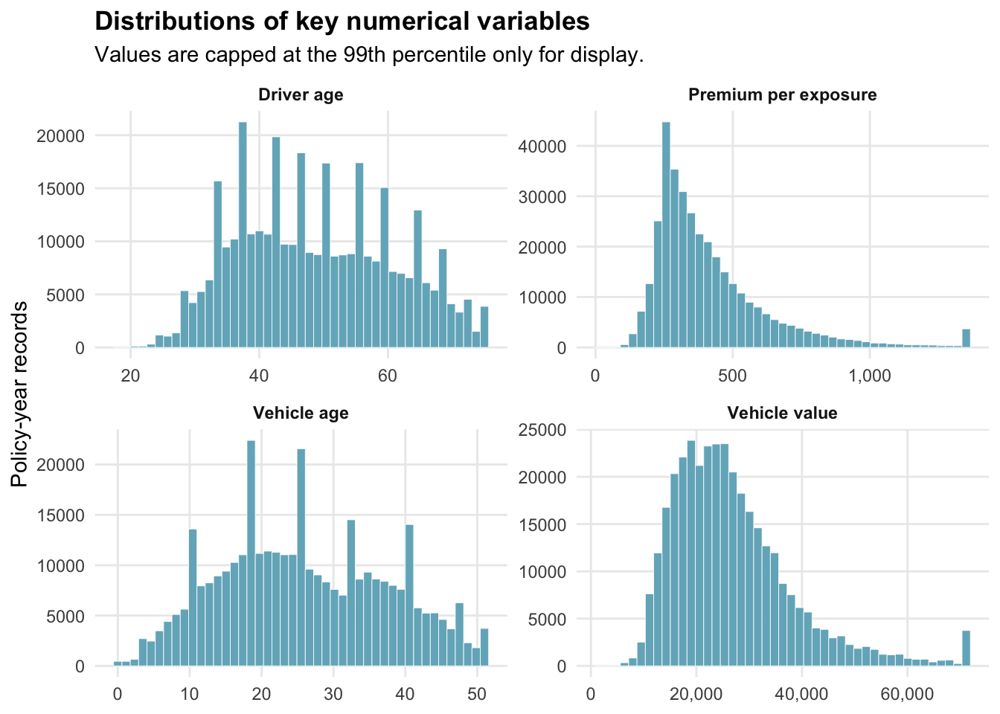
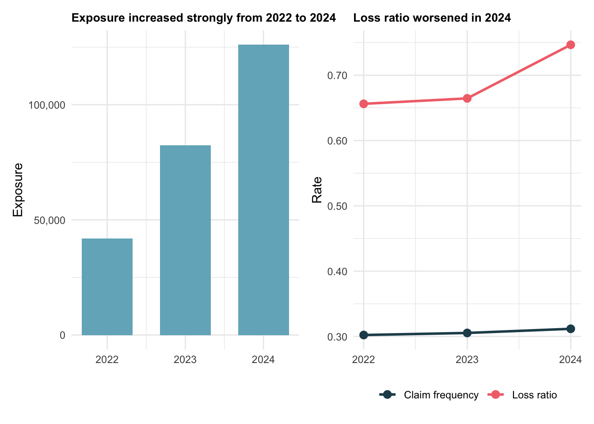
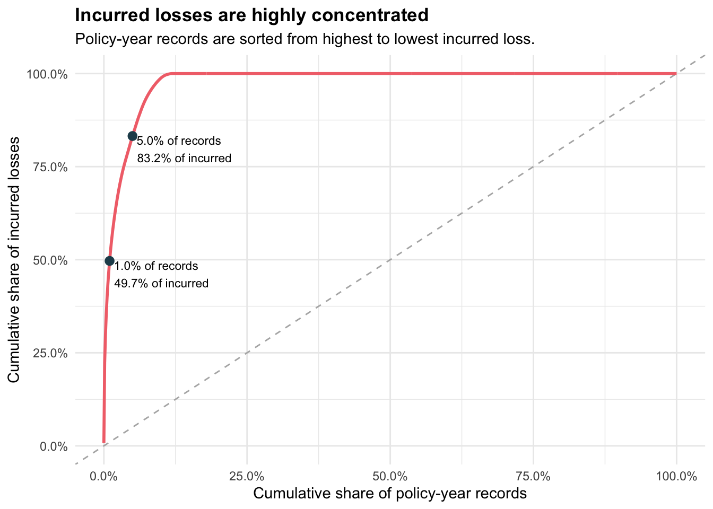

Show the code
library(tidyverse)
library(readxl)
library(knitr)
library(patchwork)
library(ggthemes)
library(scales)
library(ggridges)
library(ggdist)
library(plotly)
library(ggiraph)
library(DT)Motor insurers manage portfolios where the overall result can look acceptable while risk is concentrated in a small number of policies, coverages, vehicle profiles, or claim events. Premium adequacy is therefore not only about the average loss ratio. It also depends on whether the insurer can identify segments with higher claim frequency, higher claim severity, and more volatile incurred losses.
This study applies exploratory visual analytics to a real-world motor insurance portfolio. The purpose is to move beyond a dashboard-style summary and use fit-for-purpose visualisation methods to understand portfolio composition, claims behaviour, premium adequacy, and risk concentration.
Two files are used in this study:
Dataset of motor insurance portfolio.csv: policy-year level observations of motor insurance contracts, premiums, exposure, claim counts, and incurred costs.Descriptive of variables.xlsx: a variable dictionary describing the fields in the portfolio dataset.The dataset contains one row per policy-year observation. The same insured_id can therefore appear across multiple calendar years.
Using the motor insurance portfolio dataset, this report aims to use appropriate exploratory data analysis methods and ggplot2 visualisations to uncover:
The report uses a compact set of R packages, included : package loading, data preparation, univariate analysis, exploratory data analysis, and a concluding summary.
library(tidyverse)
library(readxl)
library(knitr)
library(patchwork)
library(ggthemes)
library(scales)
library(ggridges)
library(ggdist)
library(plotly)
library(ggiraph)
library(DT)package_tbl <- tribble(
~Package, ~Purpose,
"tidyverse", "Data import, wrangling, summarisation, and ggplot2 visualisation.",
"readxl", "Importing the Excel variable dictionary.",
"knitr", "Rendering compact summary tables.",
"patchwork", "Combining several ggplot charts into one analytical view.",
"ggthemes", "Additional clean plotting themes.",
"scales", "Readable axis labels for proportions, counts, and monetary values.",
"ggridges", "Comparing full distributions across policy segments.",
"ggdist", "Additional distribution geoms when needed.",
"plotly", "Interactive charts with hover labels, zooming, and pan controls.",
"ggiraph", "Interactive ggplot layers with tooltips and hover highlighting.",
"DT", "Searchable, sortable, and filterable data tables."
)
kable(package_tbl)| Package | Purpose |
|---|---|
| tidyverse | Data import, wrangling, summarisation, and ggplot2 visualisation. |
| readxl | Importing the Excel variable dictionary. |
| knitr | Rendering compact summary tables. |
| patchwork | Combining several ggplot charts into one analytical view. |
| ggthemes | Additional clean plotting themes. |
| scales | Readable axis labels for proportions, counts, and monetary values. |
| ggridges | Comparing full distributions across policy segments. |
| ggdist | Additional distribution geoms when needed. |
| plotly | Interactive charts with hover labels, zooming, and pan controls. |
| ggiraph | Interactive ggplot layers with tooltips and hover highlighting. |
| DT | Searchable, sortable, and filterable data tables. |
theme_set(theme_minimal(base_size = 11))
base_fill <- "#73b2c4"
accent_fill <- "#f27279"
dark_fill <- "#244c5a"
neutral_fill <- "#c7c8cc"
positive_fill <- "#5c9f6f"
warning_fill <- "#d8894c"
fmt_count <- label_number(big.mark = ",", accuracy = 1)
fmt_rate <- label_number(accuracy = 0.01)
fmt_pct <- label_percent(accuracy = 0.1)
fmt_money <- label_number(big.mark = ",", accuracy = 1)data_dir <- file.path("data", "A detailed dataset of motor insurance policies wit")
portfolio_file <- file.path(data_dir, "Dataset of motor insurance portfolio.csv")
dictionary_file <- file.path(data_dir, "Descriptive of variables.xlsx")
motor_raw <- read_delim(
portfolio_file,
delim = ";",
show_col_types = FALSE,
progress = FALSE
)
var_dictionary <- read_excel(dictionary_file, sheet = "Cartera") %>%
fill(Group, .direction = "down") %>%
filter(!is.na(Variables)) %>%
transmute(
variable = Variables,
description = Description,
group = Group
)data_profile_tbl <- tibble(
Measure = c(
"Rows",
"Variables",
"Distinct insured IDs",
"Calendar years",
"Exact duplicated rows"
),
Value = c(
fmt_count(nrow(motor_raw)),
fmt_count(ncol(motor_raw)),
fmt_count(n_distinct(motor_raw$insured_id)),
paste(sort(unique(motor_raw$year)), collapse = ", "),
fmt_count(sum(duplicated(motor_raw)))
)
)
kable(data_profile_tbl)| Measure | Value |
|---|---|
| Rows | 354,140 |
| Variables | 47 |
| Distinct insured IDs | 185,678 |
| Calendar years | 2022, 2023, 2024 |
| Exact duplicated rows | 0 |
The imported portfolio contains 354,140 policy-year records across 47 variables. There are 185,678 distinct insured IDs, confirming that some policies appear in more than one year. No exact duplicated rows are found.
The following flowchart shows how the main variable groups are used and how the key analytical metrics are derived.
flowchart LR
A("Motor insurance portfolio CSV") --> B["Policy-year records"]
C("Variable dictionary XLSX") --> D["Variable meanings and category labels"]
B --> E["Policy and underwriting profile"]
B --> F["Driver and vehicle profile"]
B --> G["Premium, exposure, claims, incurred"]
E --> H["Segment analysis"]
F --> H
G --> I["Derived metrics"]
I --> I1["Loss ratio = incurred / premium"]
I --> I2["Claim frequency = claims / exposure"]
I --> I3["Claim severity = incurred / claims"]
I --> I4["Pure premium = incurred / exposure"]
H --> J["Visual analytics and portfolio insights"]
I --> J
The full dataset is retained for reproducibility, but the analysis focuses on variables that support portfolio composition, profitability, and volatility analysis.
selected_variables <- tribble(
~Category, ~Variable, ~Why_it_is_used,
"Policy", "year", "Time trend of portfolio growth and performance.",
"Policy", "policy_type", "Coverage structure is expected to influence premium, frequency, and incurred losses.",
"Policy", "policy_status", "Cancelled policies may behave differently from active policies.",
"Policy", "business_type", "Separates new business from existing portfolio business.",
"Policy", "payment_frequency", "Billing frequency can be associated with customer and policy characteristics.",
"Policy", "bonus_score", "Prior claims experience is a core underwriting signal.",
"Driver and vehicle", "driver_age", "Driver age is commonly related to claim frequency and severity.",
"Driver and vehicle", "vehicle_age", "Vehicle age can influence repair cost, claim behaviour, and coverage choice.",
"Driver and vehicle", "fuel_type", "Fuel type may proxy vehicle use and cost patterns.",
"Driver and vehicle", "vehicle_value", "Vehicle value helps interpret premium and claim severity.",
"Driver and vehicle", "vehicle_brand", "Brand helps detect concentration in vehicle segments.",
"Geography", "municipality_type, circulation_area", "Geographic and driving environment segments may carry different risk.",
"Premiums", "total_premium", "Denominator for loss ratio and indicator of pricing level.",
"Claims", "total_claims", "Core claim count variable for frequency analysis.",
"Claims", "total_incurred", "Core loss cost variable for profitability and volatility analysis.",
"Exposure", "total_exposure", "Normalises claim and loss experience by time on risk."
)
kable(selected_variables)| Category | Variable | Why_it_is_used |
|---|---|---|
| Policy | year | Time trend of portfolio growth and performance. |
| Policy | policy_type | Coverage structure is expected to influence premium, frequency, and incurred losses. |
| Policy | policy_status | Cancelled policies may behave differently from active policies. |
| Policy | business_type | Separates new business from existing portfolio business. |
| Policy | payment_frequency | Billing frequency can be associated with customer and policy characteristics. |
| Policy | bonus_score | Prior claims experience is a core underwriting signal. |
| Driver and vehicle | driver_age | Driver age is commonly related to claim frequency and severity. |
| Driver and vehicle | vehicle_age | Vehicle age can influence repair cost, claim behaviour, and coverage choice. |
| Driver and vehicle | fuel_type | Fuel type may proxy vehicle use and cost patterns. |
| Driver and vehicle | vehicle_value | Vehicle value helps interpret premium and claim severity. |
| Driver and vehicle | vehicle_brand | Brand helps detect concentration in vehicle segments. |
| Geography | municipality_type, circulation_area | Geographic and driving environment segments may carry different risk. |
| Premiums | total_premium | Denominator for loss ratio and indicator of pricing level. |
| Claims | total_claims | Core claim count variable for frequency analysis. |
| Claims | total_incurred | Core loss cost variable for profitability and volatility analysis. |
| Exposure | total_exposure | Normalises claim and loss experience by time on risk. |
Missingness is small and concentrated in vehicle-related fields. fuel_type is converted to an explicit Unknown category so that these policies remain visible in categorical charts. Numeric missing values are retained and excluded only from charts or summaries that require those variables.
missing_tbl <- motor_raw %>%
summarise(across(everything(), ~ sum(is.na(.x)))) %>%
pivot_longer(everything(), names_to = "variable", values_to = "missing_n") %>%
filter(missing_n > 0) %>%
mutate(
missing_pct = missing_n / nrow(motor_raw),
missing_n = fmt_count(missing_n),
missing_pct = fmt_pct(missing_pct)
)
kable(missing_tbl)| variable | missing_n | missing_pct |
|---|---|---|
| vehicle_age | 2 | 0.0% |
| age_driving_licence | 2 | 0.0% |
| fuel_type | 1,287 | 0.4% |
| vehicle_value | 513 | 0.1% |
The missing values are limited: fuel_type has the largest missing count, while vehicle_value, vehicle_age, and age_driving_licence have very small missing shares. Because the missingness is low, the main portfolio-level results are not sensitive to these fields.
The categorical variables are recoded from short codes into readable labels using the descriptions from the Excel dictionary.
safe_divide <- function(num, den) {
if_else(!is.na(den) & den > 0, num / den, NA_real_)
}
motor_analysis <- motor_raw %>%
mutate(
policy_type = fct_recode(
factor(policy_type),
"Third-party" = "TP",
"Third-party + glass" = "TPG",
"Third-party + add-ons" = "CC",
"Comprehensive with excess" = "COMP_E",
"Comprehensive without excess" = "COMP_N"
),
policy_type = factor(
policy_type,
levels = c(
"Third-party",
"Third-party + glass",
"Third-party + add-ons",
"Comprehensive with excess",
"Comprehensive without excess"
)
),
policy_status = fct_recode(
factor(policy_status),
"Active" = "A",
"Cancelled" = "C"
),
business_type = fct_recode(
factor(business_type),
"New business" = "NB",
"Portfolio" = "P"
),
payment_frequency = fct_recode(
factor(payment_frequency),
"Annual" = "A",
"Semiannual" = "S",
"Quarterly" = "Q"
),
payment_frequency = factor(
payment_frequency,
levels = c("Annual", "Semiannual", "Quarterly")
),
bonus_score = fct_recode(
factor(bonus_score),
"Favourable history" = "G",
"Neutral history" = "N",
"Poor history" = "B"
),
bonus_score = factor(
bonus_score,
levels = c("Poor history", "Neutral history", "Favourable history")
),
fuel_type = fct_recode(
factor(fuel_type),
"Diesel" = "D",
"Gasoline" = "G"
),
fuel_type = fct_na_value_to_level(fuel_type, level = "Unknown"),
municipality_type = fct_recode(
factor(municipality_type),
"Inland" = "I",
"Coastal" = "C",
"Islands" = "IS"
),
circulation_area = fct_recode(
factor(circulation_area),
"Urban" = "U",
"Rural" = "R"
)
)The year variable is treated as an ordered time variable for trend charts, while categorical variables are treated as factors for ordered plotting.
motor_analysis <- motor_analysis %>%
mutate(
year = factor(year, levels = sort(unique(year))),
year_num = as.integer(as.character(year))
)Actuarial portfolio analysis requires normalised metrics. Claim count and incurred cost are divided by exposure, premium, or claim count depending on the question.
motor_analysis <- motor_analysis %>%
mutate(
claim_indicator = total_claims > 0,
loss_ratio = safe_divide(total_incurred, total_premium),
claim_frequency = safe_divide(total_claims, total_exposure),
claim_severity = safe_divide(total_incurred, total_claims),
pure_premium = safe_divide(total_incurred, total_exposure),
premium_per_exposure = safe_divide(total_premium, total_exposure),
driver_age_band = cut(
driver_age,
breaks = c(17, 25, 35, 45, 55, 65, Inf),
labels = c("18-25", "26-35", "36-45", "46-55", "56-65", "66+")
),
vehicle_age_band = cut(
vehicle_age,
breaks = c(-1, 5, 10, 20, 30, 40, Inf),
labels = c("0-5", "6-10", "11-20", "21-30", "31-40", "41+")
),
claim_count_band = case_when(
total_claims == 0 ~ "0",
total_claims == 1 ~ "1",
total_claims == 2 ~ "2",
total_claims >= 3 ~ "3+",
TRUE ~ NA_character_
),
claim_count_band = factor(claim_count_band, levels = c("0", "1", "2", "3+"))
)The key metrics used in the analysis are:
metric_definitions <- tribble(
~Metric, ~Formula, ~Interpretation,
"Loss ratio", "total_incurred / total_premium", "Profitability indicator. Higher values indicate that claims consume more premium.",
"Claim frequency", "total_claims / total_exposure", "Claim counts normalised by time on risk.",
"Claim severity", "total_incurred / total_claims", "Average incurred cost per claim, calculated only where claims exist.",
"Pure premium", "total_incurred / total_exposure", "Expected loss cost per exposure year.",
"Premium per exposure", "total_premium / total_exposure", "Annualised premium level."
)
kable(metric_definitions)| Metric | Formula | Interpretation |
|---|---|---|
| Loss ratio | total_incurred / total_premium | Profitability indicator. Higher values indicate that claims consume more premium. |
| Claim frequency | total_claims / total_exposure | Claim counts normalised by time on risk. |
| Claim severity | total_incurred / total_claims | Average incurred cost per claim, calculated only where claims exist. |
| Pure premium | total_incurred / total_exposure | Expected loss cost per exposure year. |
| Premium per exposure | total_premium / total_exposure | Annualised premium level. |
portfolio_metrics <- motor_analysis %>%
summarise(
records = n(),
unique_policies = n_distinct(insured_id),
exposure = sum(total_exposure, na.rm = TRUE),
premium = sum(total_premium, na.rm = TRUE),
claims = sum(total_claims, na.rm = TRUE),
incurred = sum(total_incurred, na.rm = TRUE),
loss_ratio = incurred / premium,
claim_frequency = claims / exposure,
claim_severity = incurred / claims,
pure_premium = incurred / exposure,
avg_premium_per_exposure = premium / exposure,
no_claim_share = mean(total_claims == 0, na.rm = TRUE),
no_incurred_share = mean(total_incurred == 0, na.rm = TRUE)
)
portfolio_metrics_display <- portfolio_metrics %>%
transmute(
`Policy-year records` = fmt_count(records),
`Total exposure` = fmt_count(exposure),
`Total premium` = fmt_money(premium),
`Total claims` = fmt_count(claims),
`Total incurred` = fmt_money(incurred),
`Loss ratio` = fmt_pct(loss_ratio),
`Claim frequency` = fmt_rate(claim_frequency),
`Claim severity` = fmt_money(claim_severity),
`No-claim share` = fmt_pct(no_claim_share)
)
kable(portfolio_metrics_display)| Policy-year records | Total exposure | Total premium | Total claims | Total incurred | Loss ratio | Claim frequency | Claim severity | No-claim share |
|---|---|---|---|---|---|---|---|---|
| 354,140 | 250,326 | 105,079,669 | 77,099 | 73,864,811 | 70.3% | 0.31 | 958 | 85.7% |
At portfolio level, the loss ratio is 70.3%, with 0.31 claims per exposure year. The high no-claim share of 85.7% indicates a strongly zero-inflated claim process: most policies do not claim, while a minority of claim records drive the loss result.
policy_mix <- motor_analysis %>%
count(policy_type, name = "records") %>%
mutate(
share = records / sum(records),
policy_type = fct_reorder(policy_type, records)
)
ggplot(policy_mix, aes(x = records, y = policy_type, fill = policy_type)) +
geom_col(width = 0.7) +
geom_text(
aes(label = fmt_pct(share)),
hjust = -0.15,
size = 3.2
) +
scale_x_continuous(
labels = fmt_count,
expand = expansion(mult = c(0, 0.13))
) +
scale_fill_manual(values = c(
"Third-party" = "#b7b7b7",
"Third-party + glass" = "#9ab7c6",
"Third-party + add-ons" = "#73b2c4",
"Comprehensive with excess" = "#f2a65a",
"Comprehensive without excess" = "#f27279"
)) +
labs(
title = "Policy type mix",
subtitle = "Third-party with add-ons is the dominant coverage structure.",
x = "Policy-year records",
y = NULL
) +
guides(fill = "none") +
theme(
panel.grid.major.y = element_blank(),
plot.title = element_text(face = "bold")
)
make_share_bar <- function(data, var, title) {
data %>%
count({{ var }}, name = "records") %>%
mutate(
share = records / sum(records),
segment = fct_reorder(as.factor({{ var }}), records)
) %>%
ggplot(aes(x = records, y = segment)) +
geom_col(fill = base_fill, width = 0.7) +
geom_text(aes(label = fmt_pct(share)), hjust = -0.1, size = 3) +
scale_x_continuous(
labels = fmt_count,
expand = expansion(mult = c(0, 0.18))
) +
labs(title = title, x = NULL, y = NULL) +
theme(
panel.grid.major.y = element_blank(),
plot.title = element_text(face = "bold", size = 10)
)
}
p_bonus <- make_share_bar(motor_analysis, bonus_score, "Bonus score")
p_payment <- make_share_bar(motor_analysis, payment_frequency, "Payment frequency")
p_fuel <- make_share_bar(motor_analysis, fuel_type, "Fuel type")
p_area <- make_share_bar(motor_analysis, circulation_area, "Circulation area")
(p_bonus | p_payment) / (p_fuel | p_area)
The composition charts show that the portfolio is concentrated in favourable bonus-score policies and annual payment policies. Diesel vehicles and urban circulation also account for substantial shares, making them important when interpreting portfolio-level results.
numeric_plot_data <- motor_analysis %>%
transmute(
`Driver age` = driver_age,
`Vehicle age` = vehicle_age,
`Vehicle value` = vehicle_value,
`Premium per exposure` = premium_per_exposure
) %>%
pivot_longer(everything(), names_to = "metric", values_to = "value") %>%
filter(!is.na(value), is.finite(value)) %>%
group_by(metric) %>%
mutate(
p99 = quantile(value, 0.99, na.rm = TRUE),
value_capped = pmin(value, p99)
) %>%
ungroup()
ggplot(numeric_plot_data, aes(x = value_capped)) +
geom_histogram(bins = 45, fill = base_fill, colour = "white", linewidth = 0.15) +
facet_wrap(~ metric, scales = "free", ncol = 2) +
scale_x_continuous(labels = fmt_money) +
labs(
title = "Distributions of key numerical variables",
subtitle = "Values are capped at the 99th percentile only for display.",
x = NULL,
y = "Policy-year records"
) +
theme(
panel.grid.minor = element_blank(),
plot.title = element_text(face = "bold"),
strip.text = element_text(face = "bold")
)
The portfolio is mainly composed of middle-aged drivers and older vehicles. Premium per exposure and vehicle value are right-skewed, which is common in insurance portfolios because a small number of high-value or high-risk contracts can carry much higher premiums.
Claim variables need separate treatment because most records have zero claims, while incurred costs are highly right-skewed.
claim_count_plot <- motor_analysis %>%
count(claim_count_band, name = "records") %>%
mutate(share = records / sum(records)) %>%
ggplot(aes(x = claim_count_band, y = records)) +
geom_col(fill = neutral_fill, width = 0.7) +
geom_text(aes(label = fmt_pct(share)), vjust = -0.35, size = 3.2) +
scale_y_continuous(
labels = fmt_count,
expand = expansion(mult = c(0, 0.12))
) +
labs(
title = "Claim count per policy-year",
x = "Total claims",
y = "Policy-year records"
) +
theme(plot.title = element_text(face = "bold"))
incurred_plot <- motor_analysis %>%
filter(total_incurred > 0) %>%
ggplot(aes(x = total_incurred)) +
geom_histogram(bins = 50, fill = accent_fill, colour = "white", linewidth = 0.15) +
scale_x_log10(labels = fmt_money) +
scale_y_continuous(labels = fmt_count) +
labs(
title = "Positive incurred losses",
subtitle = "Log scale is used because incurred losses have a long right tail.",
x = "Total incurred, log scale",
y = "Claim records"
) +
theme(plot.title = element_text(face = "bold"))
claim_count_plot | incurred_plot
The no-claim share is 85.7%, and the no-incurred share is 88.1%. This validates the use of zero-aware charts and concentration analysis in later sections.
Ridgeline density plots are useful for comparing the full premium distribution across several policy types, rather than comparing only means.
set.seed(608)
sample_n <- min(nrow(motor_analysis), 100000)
motor_sample <- motor_analysis %>%
filter(!is.na(premium_per_exposure), is.finite(premium_per_exposure)) %>%
slice_sample(n = sample_n)
premium_cap <- quantile(motor_analysis$premium_per_exposure, 0.99, na.rm = TRUE)
ggplot(
motor_sample %>%
mutate(premium_plot = pmin(premium_per_exposure, premium_cap)),
aes(x = premium_plot, y = policy_type, fill = policy_type)
) +
geom_density_ridges(
alpha = 0.65,
scale = 0.9,
rel_min_height = 0.01,
colour = "white",
linewidth = 0.25
) +
scale_x_continuous(labels = fmt_money) +
scale_fill_manual(values = c(
"Third-party" = "#b7b7b7",
"Third-party + glass" = "#9ab7c6",
"Third-party + add-ons" = "#73b2c4",
"Comprehensive with excess" = "#f2a65a",
"Comprehensive without excess" = "#f27279"
)) +
labs(
title = "Annualised premium distribution by policy type",
subtitle = "The display is capped at the 99th percentile; summaries use the full data.",
x = "Premium per exposure",
y = NULL
) +
guides(fill = "none") +
theme(
panel.grid.major.y = element_blank(),
plot.title = element_text(face = "bold")
)
The premium distributions increase with coverage breadth, as expected. Comprehensive covers have wider and higher premium distributions than basic third-party products.
summarise_segment <- function(data, group_var) {
data %>%
group_by({{ group_var }}) %>%
summarise(
records = n(),
exposure = sum(total_exposure, na.rm = TRUE),
premium = sum(total_premium, na.rm = TRUE),
claims = sum(total_claims, na.rm = TRUE),
incurred = sum(total_incurred, na.rm = TRUE),
.groups = "drop"
) %>%
mutate(
exposure_share = exposure / sum(exposure),
loss_ratio = incurred / premium,
claim_frequency = claims / exposure,
claim_severity = if_else(claims > 0, incurred / claims, NA_real_),
pure_premium = incurred / exposure,
avg_premium_per_exposure = premium / exposure
)
}
portfolio_lr <- portfolio_metrics$loss_ratioThe yearly view combines volume and profitability. Exposure is shown as bars, while loss ratio and claim frequency are shown as line charts because they are rates over time.
year_summary <- summarise_segment(motor_analysis, year) %>%
mutate(year_num = as.integer(as.character(year)))
p_year_exposure <- ggplot(year_summary, aes(x = year_num, y = exposure)) +
geom_col(fill = base_fill, width = 0.65) +
scale_x_continuous(breaks = year_summary$year_num) +
scale_y_continuous(labels = fmt_count) +
labs(
title = "Exposure increased strongly from 2022 to 2024",
x = NULL,
y = "Exposure"
) +
theme(plot.title = element_text(face = "bold", size = 10))
p_year_rates <- year_summary %>%
select(year_num, loss_ratio, claim_frequency) %>%
pivot_longer(-year_num, names_to = "metric", values_to = "value") %>%
mutate(metric = recode(
metric,
loss_ratio = "Loss ratio",
claim_frequency = "Claim frequency"
)) %>%
ggplot(aes(x = year_num, y = value, colour = metric)) +
geom_line(linewidth = 1) +
geom_point(size = 2.8) +
scale_x_continuous(breaks = year_summary$year_num) +
scale_y_continuous(labels = fmt_rate) +
scale_colour_manual(values = c("Loss ratio" = accent_fill, "Claim frequency" = dark_fill)) +
labs(
title = "Loss ratio worsened in 2024",
x = NULL,
y = "Rate",
colour = NULL
) +
theme(
legend.position = "bottom",
plot.title = element_text(face = "bold", size = 10)
)
p_year_exposure | p_year_rates
year_display <- year_summary %>%
transmute(
Year = year,
Exposure = fmt_count(exposure),
Premium = fmt_money(premium),
Claims = fmt_count(claims),
Incurred = fmt_money(incurred),
`Loss ratio` = fmt_pct(loss_ratio),
`Claim frequency` = fmt_rate(claim_frequency)
)
kable(year_display)| Year | Exposure | Premium | Claims | Incurred | Loss ratio | Claim frequency |
|---|---|---|---|---|---|---|
| 2022 | 41,912 | 18,697,928 | 12,665 | 12,270,105 | 65.6% | 0.30 |
| 2023 | 82,399 | 35,344,308 | 25,158 | 23,488,354 | 66.5% | 0.31 |
| 2024 | 126,014 | 51,037,433 | 39,276 | 38,106,351 | 74.7% | 0.31 |
Exposure nearly triples across the period, from 41,912 in 2022 to 126,014 in 2024. The loss ratio also rises from 65.6% to 74.7%, suggesting that the expanding portfolio should be monitored for profitability drift.
Policy type is one of the most important underwriting dimensions because it captures coverage breadth. The three metrics are plotted separately because loss ratio, claim frequency, and claim severity have very different scales.
policy_summary <- summarise_segment(motor_analysis, policy_type)
policy_colours <- c(
"Third-party" = "#b7b7b7",
"Third-party + glass" = "#9ab7c6",
"Third-party + add-ons" = "#73b2c4",
"Comprehensive with excess" = "#f2a65a",
"Comprehensive without excess" = "#f27279"
)
make_policy_bar <- function(data, metric, title_text, axis_labeller) {
data %>%
mutate(policy_type = fct_reorder(policy_type, .data[[metric]])) %>%
ggplot(aes(x = .data[[metric]], y = policy_type, fill = policy_type)) +
geom_col(width = 0.68) +
geom_text(
aes(label = axis_labeller(.data[[metric]])),
hjust = -0.12,
size = 3.1
) +
scale_x_continuous(
labels = axis_labeller,
expand = expansion(mult = c(0, 0.18))
) +
scale_fill_manual(values = policy_colours) +
labs(
title = title_text,
x = NULL,
y = NULL
) +
guides(fill = "none") +
theme(
panel.grid.major.y = element_blank(),
plot.title = element_text(face = "bold", size = 10)
)
}
p_policy_lr <- make_policy_bar(
policy_summary,
"loss_ratio",
"Loss ratio",
fmt_pct
)
p_policy_freq <- make_policy_bar(
policy_summary,
"claim_frequency",
"Claim frequency",
fmt_rate
)
p_policy_sev <- make_policy_bar(
policy_summary,
"claim_severity",
"Claim severity",
fmt_money
)
p_policy_lr / p_policy_freq / p_policy_sev +
plot_annotation(
title = "Policy-type risk indicators by scale",
subtitle = "Comprehensive without excess leads loss ratio and frequency;\nthird-party covers show higher severity when claims occur.",
theme = theme(
plot.title = element_text(face = "bold"),
plot.subtitle = element_text(size = 9)
)
)
policy_display <- policy_summary %>%
arrange(desc(loss_ratio)) %>%
transmute(
`Policy type` = policy_type,
Exposure = fmt_count(exposure),
`Exposure share` = fmt_pct(exposure_share),
`Loss ratio` = fmt_pct(loss_ratio),
`Claim frequency` = fmt_rate(claim_frequency),
`Claim severity` = fmt_money(claim_severity)
)
kable(policy_display)| Policy type | Exposure | Exposure share | Loss ratio | Claim frequency | Claim severity |
|---|---|---|---|---|---|
| Comprehensive without excess | 12,342 | 4.9% | 93.9% | 1.05 | 752 |
| Comprehensive with excess | 65,040 | 26.0% | 73.8% | 0.41 | 988 |
| Third-party + glass | 24,905 | 9.9% | 69.2% | 0.21 | 1,100 |
| Third-party + add-ons | 144,235 | 57.6% | 63.4% | 0.22 | 991 |
| Third-party | 3,803 | 1.5% | 54.3% | 0.13 | 1,092 |
Comprehensive without excess has the highest loss ratio at 93.9% and the highest claim frequency at 1.05. This is consistent with the broader coverage design: more covered events can become payable claims. However, the result also signals that this product should be reviewed for deductible design, premium adequacy, and claim control.
The bonus score records past claims experience, so it should be directly related to future claim frequency if it is working as an underwriting signal.
bonus_summary <- summarise_segment(motor_analysis, bonus_score)
bonus_long <- bonus_summary %>%
select(bonus_score, loss_ratio, claim_frequency, avg_premium_per_exposure) %>%
pivot_longer(-bonus_score, names_to = "metric", values_to = "value") %>%
mutate(metric = recode(
metric,
loss_ratio = "Loss ratio",
claim_frequency = "Claim frequency",
avg_premium_per_exposure = "Premium per exposure"
))
ggplot(bonus_long, aes(x = bonus_score, y = value, fill = bonus_score)) +
geom_col(width = 0.7) +
facet_wrap(~ metric, scales = "free_y", ncol = 1) +
scale_fill_manual(values = c(
"Poor history" = accent_fill,
"Neutral history" = warning_fill,
"Favourable history" = positive_fill
)) +
scale_y_continuous(labels = fmt_rate) +
labs(
title = "Bonus score separates risk, but premium relativities do not fully remove loss-ratio differences",
x = NULL,
y = NULL
) +
guides(fill = "none") +
theme(
panel.grid.major.x = element_blank(),
axis.text.x = element_text(angle = 20, hjust = 1),
plot.title = element_text(face = "bold"),
strip.text = element_text(face = "bold")
)
Poor-history policies have a claim frequency of 0.62, compared with 0.30 for favourable-history policies. The pricing level is also much higher for poor-history policies, but their loss ratio remains above the favourable segment. This suggests that the bonus score is useful but may not fully capture residual risk.
driver_age_summary <- summarise_segment(motor_analysis, driver_age_band) %>%
filter(!is.na(driver_age_band)) %>%
mutate(band = factor(as.character(driver_age_band), levels = levels(motor_analysis$driver_age_band)))
vehicle_age_summary <- summarise_segment(motor_analysis, vehicle_age_band) %>%
filter(!is.na(vehicle_age_band)) %>%
mutate(band = factor(as.character(vehicle_age_band), levels = levels(motor_analysis$vehicle_age_band)))
make_band_rate_plot <- function(summary_df, title_text) {
summary_df %>%
select(band, loss_ratio, claim_frequency, claim_severity) %>%
pivot_longer(-band, names_to = "metric", values_to = "value") %>%
mutate(metric = recode(
metric,
loss_ratio = "Loss ratio",
claim_frequency = "Claim frequency",
claim_severity = "Claim severity"
)) %>%
ggplot(aes(x = band, y = value, group = metric, colour = metric)) +
geom_line(linewidth = 0.9) +
geom_point(size = 2.2) +
facet_wrap(~ metric, scales = "free_y", ncol = 1) +
scale_colour_manual(values = c(
"Loss ratio" = accent_fill,
"Claim frequency" = dark_fill,
"Claim severity" = warning_fill
)) +
scale_y_continuous(labels = fmt_rate) +
labs(title = title_text, x = NULL, y = NULL, colour = NULL) +
theme(
legend.position = "none",
axis.text.x = element_text(angle = 30, hjust = 1),
plot.title = element_text(face = "bold", size = 10),
strip.text = element_text(face = "bold")
)
}
make_band_rate_plot(driver_age_summary, "Driver age bands") |
make_band_rate_plot(vehicle_age_summary, "Vehicle age bands")
Claim frequency generally decreases with older driver and vehicle age bands, while severity is higher in the oldest driver and vehicle groups. This is a useful actuarial pattern: lower frequency does not always mean lower total risk if severity rises.
geo_policy_summary <- motor_analysis %>%
mutate(geo_segment = paste(municipality_type, circulation_area, sep = " / ")) %>%
group_by(policy_type, geo_segment) %>%
summarise(
exposure = sum(total_exposure, na.rm = TRUE),
premium = sum(total_premium, na.rm = TRUE),
incurred = sum(total_incurred, na.rm = TRUE),
claims = sum(total_claims, na.rm = TRUE),
.groups = "drop"
) %>%
mutate(loss_ratio = incurred / premium)
ggplot(geo_policy_summary, aes(x = geo_segment, y = policy_type, fill = loss_ratio)) +
geom_tile(colour = "white", linewidth = 0.5) +
geom_text(aes(label = fmt_pct(loss_ratio)), size = 3) +
scale_fill_gradient2(
low = "#73b2c4",
mid = "#f5f5f5",
high = "#d95f02",
midpoint = portfolio_lr,
labels = fmt_pct
) +
labs(
title = "Loss ratio by policy type and geographic driving segment",
subtitle = "Colours are centred on the portfolio loss ratio.",
x = NULL,
y = NULL,
fill = "Loss ratio"
) +
theme(
axis.text.x = element_text(angle = 35, hjust = 1),
panel.grid = element_blank(),
plot.title = element_text(face = "bold")
)
The heatmap highlights that policy type differences are larger than geography differences, but some urban and coastal combinations show elevated loss ratios. This supports treating geography as a secondary segmentation layer rather than the sole driver of portfolio performance.
The following bubble chart focuses on vehicle brands with at least 1,000 exposure years. This avoids over-interpreting very small brand segments.
brand_summary <- summarise_segment(motor_analysis, vehicle_brand) %>%
filter(exposure >= 1000) %>%
slice_max(exposure, n = 15) %>%
mutate(vehicle_brand = fct_reorder(vehicle_brand, loss_ratio))
ggplot(brand_summary, aes(
x = loss_ratio,
y = vehicle_brand,
size = exposure,
colour = claim_frequency
)) +
geom_vline(xintercept = portfolio_lr, linetype = "dashed", colour = "grey40") +
geom_point(alpha = 0.8) +
scale_x_continuous(labels = fmt_pct) +
scale_size_continuous(labels = fmt_count, range = c(3, 10)) +
scale_colour_gradient(low = "#73b2c4", high = "#d95f02") +
labs(
title = "Large vehicle-brand segments differ in loss ratio and claim frequency",
subtitle = "Dashed line marks the portfolio loss ratio.",
x = "Loss ratio",
y = NULL,
size = "Exposure",
colour = "Claim frequency"
) +
theme(
panel.grid.major.y = element_blank(),
plot.title = element_text(face = "bold")
)
Among the largest brand segments, several brands sit above the portfolio loss ratio. Because exposure is also high, these segments can materially affect the total result and deserve deeper underwriting review.
Insurance portfolios can be volatile because large losses are rare but expensive. A Pareto-style cumulative curve is appropriate because it shows how much incurred cost is explained by the highest-loss policy-year records.
incurred_sorted <- motor_analysis %>%
arrange(desc(total_incurred)) %>%
mutate(
rank = row_number(),
policy_share = rank / n(),
incurred_share = cumsum(total_incurred) / sum(total_incurred, na.rm = TRUE)
)
top_share_tbl <- tibble(policy_share = c(0.001, 0.005, 0.01, 0.05, 0.10)) %>%
mutate(
records = ceiling(policy_share * nrow(motor_analysis)),
incurred_share = map_dbl(
records,
~ sum(incurred_sorted$total_incurred[seq_len(.x)], na.rm = TRUE) /
sum(motor_analysis$total_incurred, na.rm = TRUE)
)
)
pareto_data <- incurred_sorted %>%
filter(rank == 1 | rank %% 500 == 0 | rank == n())
ggplot(pareto_data, aes(x = policy_share, y = incurred_share)) +
geom_abline(linetype = "dashed", colour = "grey70") +
geom_line(colour = accent_fill, linewidth = 1) +
geom_point(
data = top_share_tbl %>% filter(policy_share %in% c(0.01, 0.05)),
aes(x = policy_share, y = incurred_share),
inherit.aes = FALSE,
colour = dark_fill,
size = 2.6
) +
geom_text(
data = top_share_tbl %>% filter(policy_share %in% c(0.01, 0.05)),
aes(
x = policy_share,
y = incurred_share,
label = paste0(fmt_pct(policy_share), " of records\n", fmt_pct(incurred_share), " of incurred")
),
inherit.aes = FALSE,
hjust = -0.05,
vjust = 1,
size = 3
) +
scale_x_continuous(labels = fmt_pct, limits = c(0, 1)) +
scale_y_continuous(labels = fmt_pct, limits = c(0, 1)) +
labs(
title = "Incurred losses are highly concentrated",
subtitle = "Policy-year records are sorted from highest to lowest incurred loss.",
x = "Cumulative share of policy-year records",
y = "Cumulative share of incurred losses"
) +
theme(plot.title = element_text(face = "bold"))
top_share_display <- top_share_tbl %>%
transmute(
`Top share of records` = fmt_pct(policy_share),
`Number of records` = fmt_count(records),
`Share of incurred losses` = fmt_pct(incurred_share)
)
kable(top_share_display)| Top share of records | Number of records | Share of incurred losses |
|---|---|---|
| 0.1% | 355 | 19.5% |
| 0.5% | 1,771 | 38.1% |
| 1.0% | 3,542 | 49.7% |
| 5.0% | 17,707 | 83.2% |
| 10.0% | 35,414 | 98.8% |
The top 1.0% of policy-year records account for 49.7% of incurred losses. This is the clearest evidence of portfolio volatility and explains why severity monitoring is as important as average loss-ratio monitoring.
The visual patterns above are supported by simple statistical checks. Given the very large sample size, p-values should not be interpreted alone; the visual effect size and business relevance remain more important.
test_tbl <- tribble(
~Question, ~Test, ~P_value,
"Is claim occurrence independent of policy type?",
"Chi-squared test",
chisq.test(table(motor_analysis$claim_indicator, motor_analysis$policy_type))$p.value,
"Is claim occurrence independent of bonus score?",
"Chi-squared test",
chisq.test(table(motor_analysis$claim_indicator, motor_analysis$bonus_score))$p.value,
"Is claim occurrence independent of circulation area?",
"Chi-squared test",
chisq.test(table(motor_analysis$claim_indicator, motor_analysis$circulation_area))$p.value,
"Do capped policy-year loss ratios differ by policy type?",
"Kruskal-Wallis test",
kruskal.test(
pmin(loss_ratio, quantile(loss_ratio, 0.99, na.rm = TRUE)) ~ policy_type,
data = motor_analysis
)$p.value
)
test_tbl %>%
mutate(P_value = format.pval(P_value, digits = 3, eps = 0.001)) %>%
kable()| Question | Test | P_value |
|---|---|---|
| Is claim occurrence independent of policy type? | Chi-squared test | <0.001 |
| Is claim occurrence independent of bonus score? | Chi-squared test | <0.001 |
| Is claim occurrence independent of circulation area? | Chi-squared test | <0.001 |
| Do capped policy-year loss ratios differ by policy type? | Kruskal-Wallis test | <0.001 |
The tests reject independence or equality for the selected relationships at conventional thresholds. This supports the observed visual differences, especially for policy type and bonus score. However, because the portfolio is large, these tests mainly confirm that the patterns are unlikely to be random; business action should still be guided by the magnitude of the differences.
The DT table allows readers to sort and filter policy, year, bonus-score, and status segments by exposure, loss ratio, claim frequency, or severity.
interactive_segment_table <- bind_rows(
year_summary %>%
transmute(
`Segment group` = "Year",
Segment = as.character(year),
records, exposure, premium, claims, incurred,
loss_ratio, claim_frequency, claim_severity
),
policy_summary %>%
transmute(
`Segment group` = "Policy type",
Segment = as.character(policy_type),
records, exposure, premium, claims, incurred,
loss_ratio, claim_frequency, claim_severity
),
bonus_summary %>%
transmute(
`Segment group` = "Bonus score",
Segment = as.character(bonus_score),
records, exposure, premium, claims, incurred,
loss_ratio, claim_frequency, claim_severity
),
summarise_segment(motor_analysis, policy_status) %>%
transmute(
`Segment group` = "Policy status",
Segment = as.character(policy_status),
records, exposure, premium, claims, incurred,
loss_ratio, claim_frequency, claim_severity
)
) %>%
rename(
Records = records,
Exposure = exposure,
Premium = premium,
Claims = claims,
Incurred = incurred,
`Loss ratio` = loss_ratio,
`Claim frequency` = claim_frequency,
`Claim severity` = claim_severity
)
DT::datatable(
interactive_segment_table,
rownames = FALSE,
filter = "top",
options = list(
pageLength = 10,
scrollX = TRUE,
autoWidth = TRUE
)
) %>%
DT::formatRound(
columns = c("Records", "Exposure", "Premium", "Claims", "Incurred", "Claim severity"),
digits = 1
) %>%
DT::formatRound(columns = "Claim frequency", digits = 3) %>%
DT::formatPercentage(columns = "Loss ratio", digits = 1)The static heatmap already identifies high-loss-ratio cells. The interactive version adds hover details, so readers can check whether a cell is material by exposure and premium volume.
geo_policy_interactive <- geo_policy_summary %>%
mutate(
hover_text = paste0(
"<b>", policy_type, " | ", geo_segment, "</b>",
"<br>Exposure: ", fmt_count(exposure),
"<br>Premium: ", fmt_money(premium),
"<br>Incurred: ", fmt_money(incurred),
"<br>Claims: ", fmt_count(claims),
"<br>Loss ratio: ", fmt_pct(loss_ratio)
)
)
geo_heatmap_plot <- ggplot(
geo_policy_interactive,
aes(x = geo_segment, y = policy_type, fill = loss_ratio, text = hover_text)
) +
geom_tile(colour = "white", linewidth = 0.5) +
scale_fill_gradient2(
low = "#73b2c4",
mid = "#f5f5f5",
high = "#d95f02",
midpoint = portfolio_lr,
labels = fmt_pct
) +
labs(
title = "Interactive loss-ratio heatmap",
x = NULL,
y = NULL,
fill = "Loss ratio"
) +
theme(
axis.text.x = element_text(angle = 35, hjust = 1),
panel.grid = element_blank(),
plot.title = element_text(face = "bold")
)
ggplotly(geo_heatmap_plot, tooltip = "text") %>%
layout(legend = list(orientation = "h", x = 0, y = -0.35))The reader can hover over a brand to see the exact exposure, loss ratio, claim frequency, and severity.
brand_interactive <- brand_summary %>%
mutate(
tooltip = paste0(
vehicle_brand,
"\nExposure: ", fmt_count(exposure),
"\nLoss ratio: ", fmt_pct(loss_ratio),
"\nClaim frequency: ", fmt_rate(claim_frequency),
"\nClaim severity: ", fmt_money(claim_severity)
)
)
brand_giraph_plot <- ggplot(
brand_interactive,
aes(x = loss_ratio, y = vehicle_brand, size = exposure, colour = claim_frequency)
) +
geom_vline(xintercept = portfolio_lr, linetype = "dashed", colour = "grey40") +
geom_point_interactive(
aes(tooltip = tooltip, data_id = vehicle_brand),
alpha = 0.85
) +
scale_x_continuous(labels = fmt_pct) +
scale_size_continuous(labels = fmt_count, range = c(3, 10)) +
scale_colour_gradient(low = "#73b2c4", high = "#d95f02") +
labs(
title = "Interactive brand concentration view",
subtitle = "Hover over a point to inspect segment metrics.",
x = "Loss ratio",
y = NULL,
size = "Exposure",
colour = "Claim frequency"
) +
theme(
panel.grid.major.y = element_blank(),
plot.title = element_text(face = "bold")
)
girafe(
ggobj = brand_giraph_plot,
width_svg = 8,
height_svg = 5,
options = list(
opts_hover(css = "stroke:#244c5a;stroke-width:2px;cursor:pointer;"),
opts_tooltip(css = "background-color:white;color:#244c5a;padding:6px;border:1px solid #c7c8cc;border-radius:4px;")
)
)The Plotly Pareto curve makes it easier to inspect how quickly incurred losses accumulate as the highest-loss records are added.
pareto_hover <- pareto_data %>%
mutate(
hover_text = paste0(
"Rank: ", fmt_count(rank),
"<br>Cumulative records: ", fmt_pct(policy_share),
"<br>Cumulative incurred: ", fmt_pct(incurred_share)
)
)
top_share_hover <- top_share_tbl %>%
mutate(
hover_text = paste0(
"Top records: ", fmt_pct(policy_share),
"<br>Number of records: ", fmt_count(records),
"<br>Share of incurred: ", fmt_pct(incurred_share)
)
)
plot_ly() %>%
add_lines(
data = pareto_hover,
x = ~ policy_share,
y = ~ incurred_share,
text = ~ hover_text,
hoverinfo = "text",
line = list(color = accent_fill, width = 3),
name = "Cumulative incurred"
) %>%
add_lines(
x = c(0, 1),
y = c(0, 1),
line = list(color = "gray70", dash = "dash"),
hoverinfo = "skip",
showlegend = FALSE
) %>%
add_markers(
data = top_share_hover,
x = ~ policy_share,
y = ~ incurred_share,
text = ~ hover_text,
hoverinfo = "text",
marker = list(color = dark_fill, size = 8),
name = "Selected thresholds"
) %>%
layout(
title = "Interactive incurred-loss concentration curve",
xaxis = list(title = "Cumulative share of policy-year records", tickformat = ".0%"),
yaxis = list(title = "Cumulative share of incurred losses", tickformat = ".0%"),
legend = list(orientation = "h", x = 0, y = -0.2)
)This visual analysis leads to the following evidence-based findings:
Comprehensive without excess is the most concerning policy type, with the highest claim frequency and the highest loss ratio.From an underwriting and portfolio-management perspective, the most practical next steps are to investigate comprehensive-without-excess policies, review bonus-score relativities, monitor 2024 profitability drift, and build a severity-monitoring view for large incurred losses.